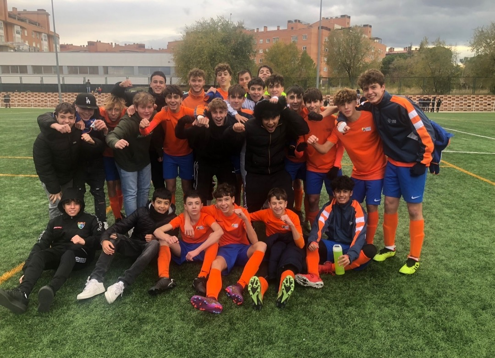

Deporte / Boxeo / Fútbol
La constancia también se entrena.
El boxeo es mi deporte principal.
Me gusta porque no permite esconderse detrás de una
excusa durante demasiado tiempo.
Obliga a repetir, corregir, escuchar y volver a intentarlo.
Es algo que siempre llevaré conmigo, da igual que cambie el puesto, las circustancias o la rama de estudio. El boxeo irá donde yo vaya.
La exigencia en este deporte, termina apareciendo también cuando estudio o cuando quiero que un trabajo quede realmente bien.
También he disfrutado del fútbol durante muchos años.
Compromiso, compañerismo y trabajo constante. Marcaron mi etapa en el fútbol de instituto.